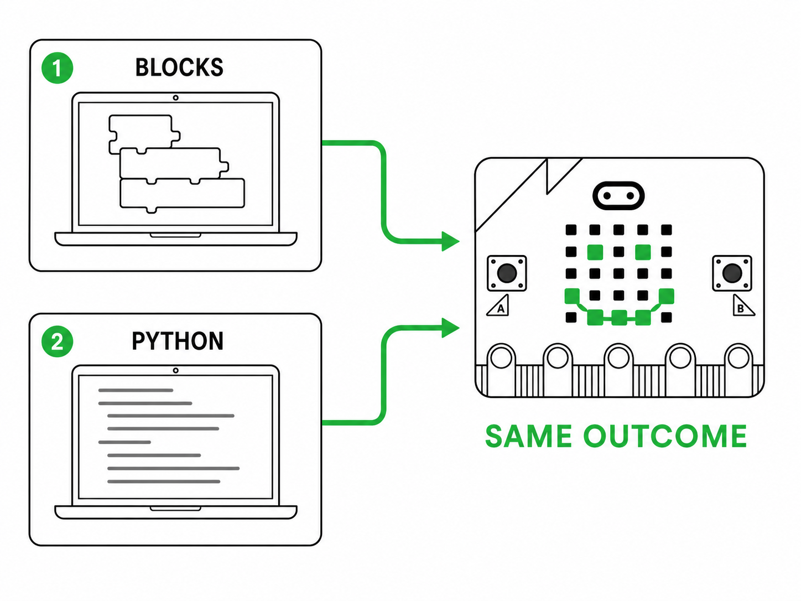
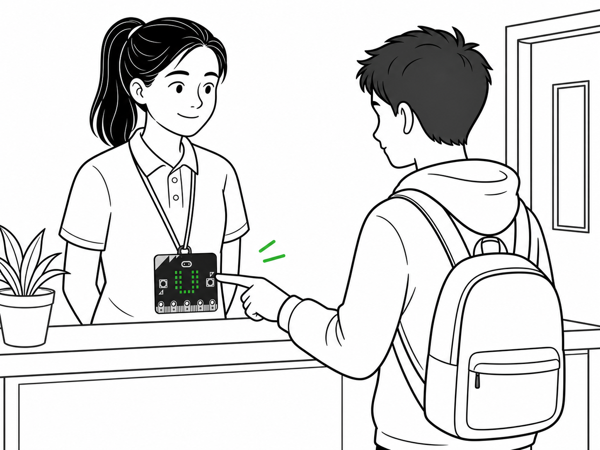
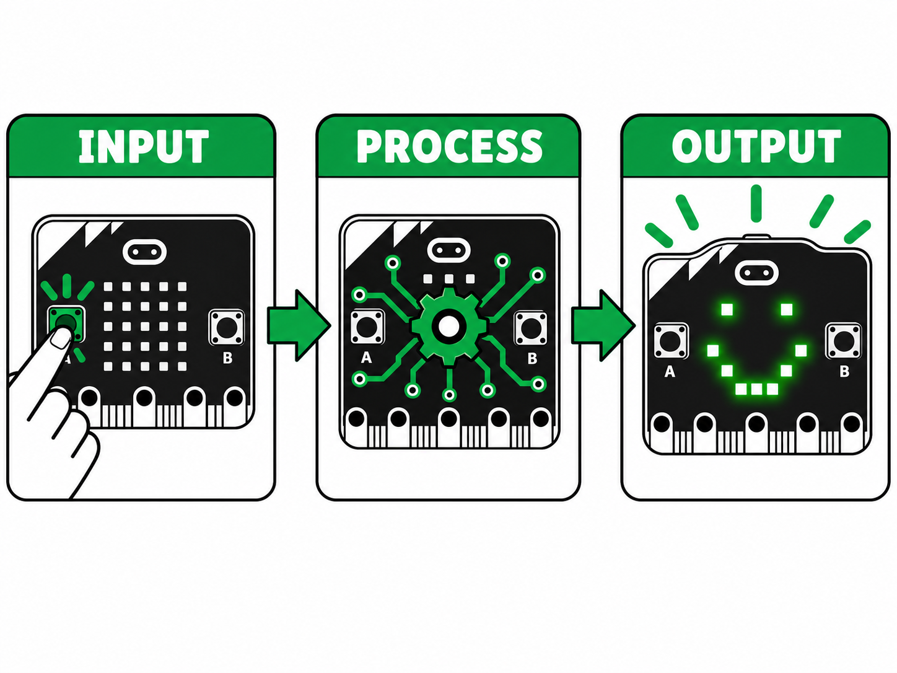
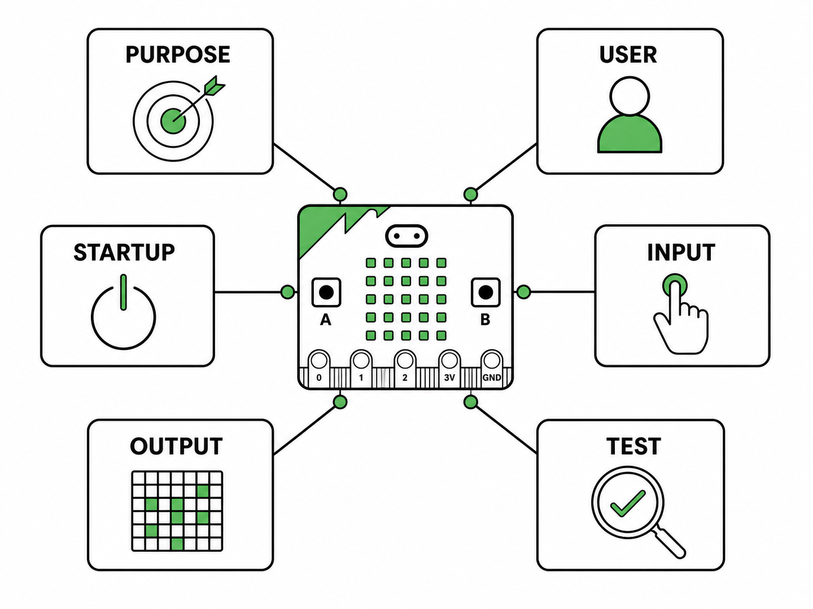
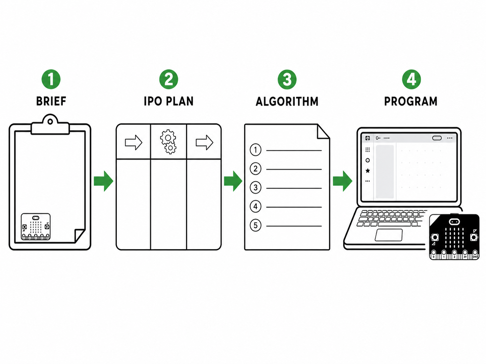
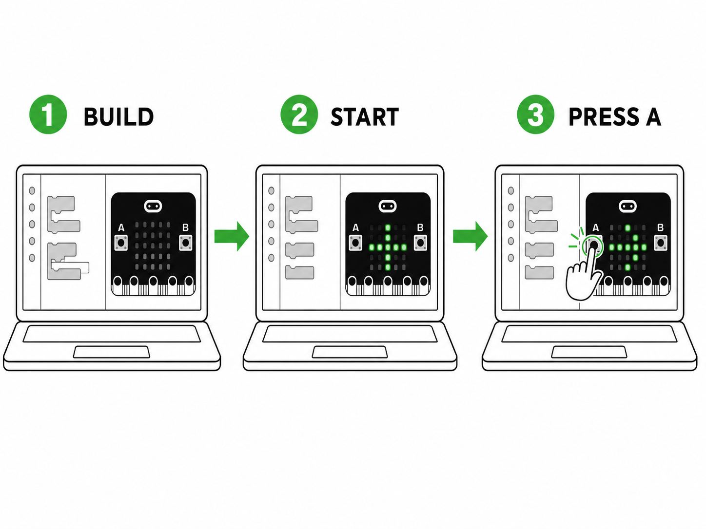
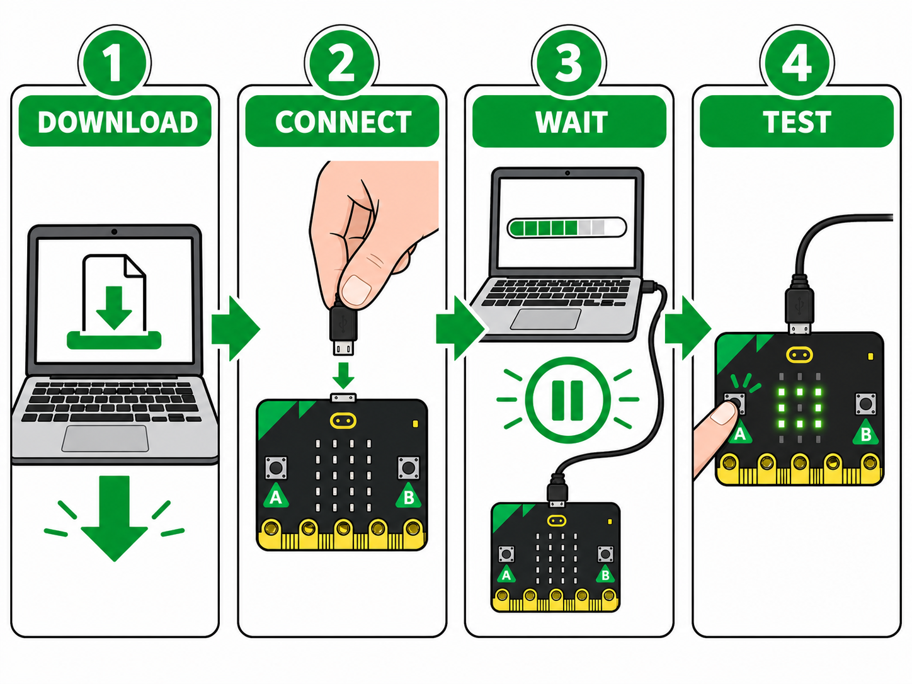
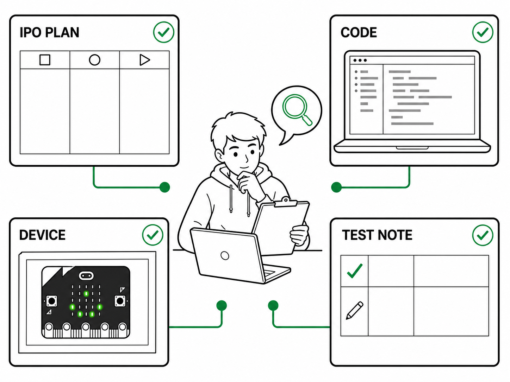

PREPARE · 3 MIN
Set up your project
You need one micro:bit, a tested USB data cable and access to an editor. Work independently or use Driver and Navigator roles.

YEAR 8 · TERM 1 · WEEK 2 PROJECT
Turn a precise plan into a physical input–process–output system.

60-MINUTE PROJECT SESSION
Create a welcome icon, use Button A as an input and make the physical LED matrix respond.
PREPARE · 3 MIN
You need one micro:bit, a tested USB data cable and access to an editor. Work independently or use Driver and Navigator roles.

STARTER · 7 MIN
A Year 8 helper’s badge displays a welcome icon. When a visitor presses Button A, it displays the helper’s initials.
Number each instruction from 1 to 5.

MAIN ACTIVITY 1 · 14 MIN
Create a digital badge for a Year 8 student helper. It must welcome a visitor and respond when Button A is pressed.

Write 5–7 ordered steps. Someone else should be able to build the behaviour without asking you a question.

MAIN ACTIVITY 2 · 26 MIN
Add one welcome icon that appears when the program begins.
When Button A is pressed, display your initials or a short welcome word.


OPTIONAL EXTENSION
Add Button B so it displays a different symbol or short message. Preserve the original Button A behaviour.
PLENARY · 6 MIN

REVIEW AND SUBMIT
Check that your name, class, IPO, algorithm, test record and evidence are included. Upload the PDF—not a screenshot.